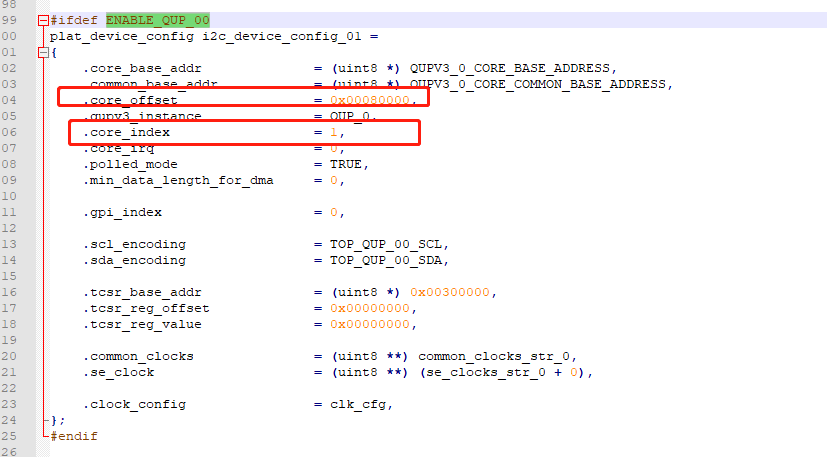

README
ABL阶段有时需要读取某些i2c设备状态，但默认没有i2c驱动，需要添加。
refer
xblabl_i2c
XBL打开I2C配置
要在abl中使用i2c，首先需要在xbl中打开i2c，要确认需要打开哪一路i2c，可以在kernel dtsi中确认信息，以guage i2c举例，配置如下：
scuba-qupv3.dtsi:
qupv3_se0_i2c: i2c@4a80000 {
compatible = "qcom,i2c-geni";
reg = <0x4a80000 0x4000>;
#address-cells = <1>;
#size-cells = <0>;
interrupts = <GIC_SPI 327 IRQ_TYPE_LEVEL_HIGH>;
clock-names = "se-clk", "m-ahb", "s-ahb";
clocks = <&gcc GCC_QUPV3_WRAP0_S0_CLK>,
<&gcc GCC_QUPV3_WRAP_0_M_AHB_CLK>,
<&gcc GCC_QUPV3_WRAP_0_S_AHB_CLK>;
pinctrl-names = "default", "sleep";
pinctrl-0 = <&qupv3_se0_i2c_active>;
pinctrl-1 = <&qupv3_se0_i2c_sleep>;
dmas = <&gpi_dma0 0 0 3 64 0>,
<&gpi_dma0 1 0 3 64 0>;
dma-names = "tx", "rx";
qcom,wrapper-core = <&qupv3_0>;
status = "disabled";
};
确认信息后，在XBL\boot_images\QcomPkg\SocPkg\AgattiPkg\Settings\I2C\core\i2c_devcfg.c文件中进行对照:

一是对照gpio，二是对照core_offset，三是明确i2c_device_config_0X, 如果对应，则打开相应的宏，修改如下：
//[FEATURE]-BEGIN by (xxx@xxxxx.com), 2022/09/08 for Detect battery presence during ABL phase
#define ENABLE_QUP_00 //battery
//[FEATURE]-END by (xxx@xxxxx.com), 2022/09/08 for Detect battery presence during ABL phase
二需要打开
i2c_devcfg.xml文件中的i2c_device_config_01配置：
<device name="/dev/i2c1">
<props name="config" type="DALPROP_ATTR_TYPE_STRUCT_PTR"> i2c_device_config_01 </props>
</device>
这样打开之后，i2c配置就会打开编译，通过protocol open i2c的时候才不会报错。 （注意：core_index = 1与下文I2C_INSTANCE_001要对应得上才能open i2c）
I2c Guid定义
abl中使用i2c，需要在dec文件定义将i2c的Guid定义，同时在dsc文件包含i2cLib.inf进行驱动编译，修改如下：
diff --git a/UM.9.15/bootable/bootloader/edk2/QcomModulePkg/QcomModulePkg.dec b/UM.9.15/bootable/bootloader/edk2/QcomModulePkg/QcomModulePkg.dec
index a2ea95fd6e7..b085854dce9 100755
--- a/UM.9.15/bootable/bootloader/edk2/QcomModulePkg/QcomModulePkg.dec
+++ b/UM.9.15/bootable/bootloader/edk2/QcomModulePkg/QcomModulePkg.dec
@@ -148,7 +148,7 @@
gEfiHSerialIoProtocolGuid = { 0xfc344439, 0xafa5, 0x4707, { 0xb0, 0xcc, 0x7a, 0xc2, 0xca, 0xcb, 0x89, 0x9b }}
gEfiTLMMProtocolGuid = { 0xad9aec18, 0x7bf0, 0x4809, { 0x9e, 0x96, 0x30, 0x12, 0x30, 0x9f, 0x3d, 0xf7 } }
-
+ gQcomI2CProtocolGuid = { 0xb27ae8b1, 0x3e10, 0x4d07, { 0xab, 0x5c, 0xeb, 0x9a, 0x6d, 0xc6, 0xfa, 0x8f } }
[PcdsFixedAtBuild.common]
# LinuxLoaderCommon
diff --git a/UM.9.15/bootable/bootloader/edk2/QcomModulePkg/QcomModulePkg.dsc b/UM.9.15/bootable/bootloader/edk2/QcomModulePkg/QcomModulePkg.dsc
index a1d84c16cf0..1d4cfff546f 100755
--- a/UM.9.15/bootable/bootloader/edk2/QcomModulePkg/QcomModulePkg.dsc
+++ b/UM.9.15/bootable/bootloader/edk2/QcomModulePkg/QcomModulePkg.dsc
@@ -78,6 +78,7 @@
UefiDriverEntryPoint|MdePkg/Library/UefiDriverEntryPoint/UefiDriverEntryPoint.inf
PerformanceLib|MdeModulePkg/Library/DxePerformanceLib/DxePerformanceLib.inf
AvbLib|QcomModulePkg/Library/avb/AvbLib.inf
+ I2cLib|QcomModulePkg/Library/I2cLib/I2cLib.inf
注意：abl中的Guid要与xbl中的一致，PATH：boot_images/QcomPkg/QcomPkg.dec
gQcomI2CProtocolGuid = { 0xb27ae8b1, 0x3e10, 0x4d07, { 0xab, 0x5c, 0xeb, 0x9a, 0x6d, 0xc6, 0xfa, 0x8f } }
如果需要使用gQcomI2CProtocolGuid，那么需要在.inf文件中的[Protocols]中声明，比如下面ABL中使用：
--- a/UM.9.15/bootable/bootloader/edk2/QcomModulePkg/Application/LinuxLoader/LinuxLoader.inf
+++ b/UM.9.15/bootable/bootloader/edk2/QcomModulePkg/Application/LinuxLoader/LinuxLoader.inf
@@ -63,6 +63,7 @@
UbsanLib
xxxxxLib
UartCoreLib
+ I2cLib
ABL I2C驱动文件
驱动文件如下：
wugn@jcrj-tf-compile:I2cLib$ tree
.
├── com_dtypes.h
├── DebugLib.h
├── EFII2C.h
├── EFIPmicGpio.h
├── EFIPmicVreg.h
├── EFITlmm.h
├── i2c_api.h
├── I2CApiLib.lib
├── i2c.c
├── i2c.h
├── I2cLib.inf
├── xxxxx_battery.c
├── xxxxx_battery.h
└── QcomLib.h
QcomModulePkg/Library/I2cLib/i2c.c:
/************************************************************************************
*
* DESCRIPTION:Copyright(c) 2007-2010 Xiamen Yealink Network Technology Co,.Ltd
*
* AUTHOR:xxx
*
* HISTORY:
*
* DATE:2021-06-23 19:57:53
*
*************************************************************************************/
#include <Uefi.h>
//#include <Library/PcdLib.h>
#include <Library/UefiLib.h>
#include <Library/UefiApplicationEntryPoint.h>
#include <Library/UefiBootServicesTableLib.h>
//#include <Library/TestInterface.h>
#include "EFIPmicVreg.h"
//#include <Protocol/EFII2C.h>
#include "EFITlmm.h"
//#include <Protocol/EFIPmicGpio.h>
//#include <Library/QcomLib.h>
#include "DebugLib.h"
#include "i2c.h"
EFI_QCOM_I2C_PROTOCOL *efiQcomI2cProtocol;
static void *I2cDeviceHandle = NULL;
EFI_HANDLE *pHandles;
unsigned int linuxc_i2c_read_16bit_reg(uint8 slaveAddress,uint16 addr)
{
uint32 bRead = 0;
unsigned int getdata = 0;
i2c_status i2cstatus = I2C_SUCCESS;
unsigned char rdbuf[2] = {0};
i2c_slave_config cfg = {
.bus_frequency_khz = 400,
.slave_address = slaveAddress,
.mode = I2C,
.slave_max_clock_stretch_us = 500,
.core_configuration1 = 0,
.core_configuration2 = 0
};
gBS->Stall(600000);
i2cstatus = efiQcomI2cProtocol->read (I2cDeviceHandle, &cfg, addr, 1, rdbuf, 2, &bRead, 2500);
getdata = rdbuf[1] & 0x00ff;
getdata <<= 8;
getdata |= rdbuf[0];
if(I2C_SUCCESS != i2cstatus)
{
DEBUG((EFI_D_ERROR, "Read addr:0x%X error i2cstatus = %d\n", addr,i2cstatus));
}
else
{
DEBUG((EFI_D_ERROR, "Read rdbuf[0]= 0x%X , rdbuf[1] = 0x%X\n", rdbuf[0],rdbuf[1]));
DEBUG((EFI_D_ERROR, "Read addr:0x%X succ, getdata = 0x%X\n", addr,getdata));
}
return getdata;
}
unsigned int linuxc_i2c_write_16bit_reg(uint8 slaveAddress, uint16 addr, unsigned int reg_data)
{
uint32 bWrote = 0;
i2c_status i2cstatus = I2C_SUCCESS;
unsigned char wdbuf[1]={0};
wdbuf[0] = (unsigned char)(reg_data & 0x00ff);
wdbuf[1] = (unsigned char)((reg_data & 0x00ff) >> 8);
wdbuf[0]=reg_data;
i2c_slave_config cfg = {
.bus_frequency_khz = 400,
.slave_address = slaveAddress,
.mode = I2C,
.slave_max_clock_stretch_us = 500,
.core_configuration1 = 0,
.core_configuration2 = 0
};
i2cstatus = efiQcomI2cProtocol->write (I2cDeviceHandle, &cfg, addr, 1, wdbuf, 2, &bWrote, 2500);
if(I2C_SUCCESS != i2cstatus)
{
DEBUG((EFI_D_ERROR, " Write addr:0x%X data:0x%X error,i2cstatus = %d\n", addr, reg_data,i2cstatus));
}
else
{
DEBUG((EFI_D_ERROR, " Write addr:0x%X data:0x%X succ,bWrote = 0x%X\n", addr, reg_data,bWrote));
}
return bWrote;
}
unsigned int linuxc_i2c_read_8bit_reg(uint8 slaveAddress,uint8 addr)
{
uint32 bRead = 0;
unsigned int getdata = 0;
i2c_status i2cstatus = I2C_SUCCESS;
unsigned char rdbuf[1] = {0};
i2c_slave_config cfg = {
.bus_frequency_khz = 400,
.slave_address = slaveAddress,
.mode = I2C,
.slave_max_clock_stretch_us = 500,
.core_configuration1 = 0,
.core_configuration2 = 0
};
gBS->Stall(600000);
i2cstatus = efiQcomI2cProtocol->read (I2cDeviceHandle, &cfg, addr, 1, rdbuf, 2, &bRead, 2500);
getdata = rdbuf[0] & 0x00ff;
if(I2C_SUCCESS != i2cstatus)
{
DEBUG((EFI_D_ERROR, "Read addr:0x%X error i2cstatus = %d\n", addr,i2cstatus));
}
else
{
DEBUG((EFI_D_ERROR, "Read addr:0x%X succ, getdata = 0x%X\n", addr,getdata));
}
return getdata;
}
unsigned int linuxc_i2c_write_8bit_reg(uint8 slaveAddress, uint8 addr, unsigned int reg_data)
{
uint32 bWrote = 0;
i2c_status i2cstatus = I2C_SUCCESS;
unsigned char wdbuf[1]={0};
wdbuf[0] = (unsigned char)(reg_data & 0x00ff);
i2c_slave_config cfg = {
.bus_frequency_khz = 400,
.slave_address = slaveAddress,
.mode = I2C,
.slave_max_clock_stretch_us = 500,
.core_configuration1 = 0,
.core_configuration2 = 0
};
i2cstatus = efiQcomI2cProtocol->write (I2cDeviceHandle, &cfg, addr, 1, wdbuf, 2, &bWrote, 2500);
if(I2C_SUCCESS != i2cstatus)
{
DEBUG((EFI_D_ERROR, " Write addr:0x%X data:0x%X error,i2cstatus = %d\n", addr, reg_data,i2cstatus));
}
else
{
DEBUG((EFI_D_ERROR, " Write addr:0x%X data:0x%X succ,bWrote = 0x%X\n", addr, reg_data,bWrote));
}
return bWrote;
}
EFI_STATUS i2c_init(i2c_instance I2C_INSTANCE)
{
//EFI_QCOM_I2C_PROTOCOL *efiQcomI2cProtocol;
//void *I2cDeviceHandle;
//EFI_HANDLE *pHandles;
UINTN HandleCnt;
EFI_STATUS efiStatus = EFI_DEVICE_ERROR;
i2c_status i2cStatus;
/**找出支持gQcomI2CProtocolGuid的所有设备**/
efiStatus = gBS->LocateHandleBuffer (ByProtocol,
&gQcomI2CProtocolGuid,
NULL,
&HandleCnt,
&pHandles);
if (efiStatus != EFI_SUCCESS)
{
// Print(L"LocateHandleBuffer error %r\r\n", efiStatus);
goto I2C_EXIT;
}
efiStatus = gBS->HandleProtocol (
pHandles[0],
&gQcomI2CProtocolGuid,
(VOID **) &efiQcomI2cProtocol
);
if (efiStatus != EFI_SUCCESS)
{
//Print(L"handel EFI_SERIAL_IO_PROTOCOL[0] error %r\r\n", efiStatus);
goto I2C_EXIT;
}
i2cStatus = efiQcomI2cProtocol->open(I2C_INSTANCE, &I2cDeviceHandle);
if(i2cStatus != I2C_SUCCESS)
{
//Print(L"I2c open error %d\r\n", i2cStatus);
goto I2C_EXIT;
}
I2C_EXIT:
if(pHandles != NULL)
gBS->FreePool(pHandles);
return efiStatus;
}
调试
增加i2c读取接口如下：
int battery_is_exist(VOID)
{
unsigned int type = 0;
linuxc_i2c_write_16bit_reg(0x55,0x3e,0x0001);
type = linuxc_i2c_read_16bit_reg(0x55,0x40);//gauge中存id的寄存器地址
DEBUG((EFI_D_ERROR, "bq27z746 get dev type:0x%X\n", type));
if (type == BQ27Z746_DeviceType) {
return 1;
}
return 0;
}
打印如下：
Write addr:0x3E data:0x1 succ,bWrote = 0x2
Read rdbuf[0]= 0x46 , rdbuf[1] = 0x17
Read addr:0x40 succ, getdata = 0x1746
bq27z746 get dev type:0x1746